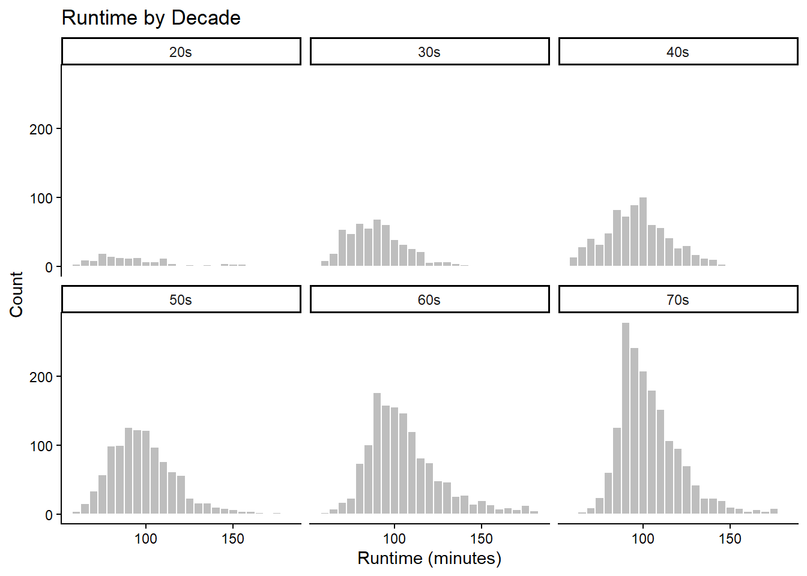

#Step 1
##Lets start loading the dictionaries
library(tidyverse)── Attaching core tidyverse packages ──────────────────────── tidyverse 2.0.0 ──
✔ dplyr 1.2.0 ✔ readr 2.1.6
✔ forcats 1.0.1 ✔ stringr 1.6.0
✔ ggplot2 4.0.2 ✔ tibble 3.3.1
✔ lubridate 1.9.5 ✔ tidyr 1.3.2
✔ purrr 1.2.1
── Conflicts ────────────────────────────────────────── tidyverse_conflicts() ──
✖ dplyr::filter() masks stats::filter()
✖ dplyr::lag() masks stats::lag()
ℹ Use the conflicted package (<http://conflicted.r-lib.org/>) to force all conflicts to become errorslibrary(dplyr)
library(infer)
## Load the data file
f<- "https://raw.githubusercontent.com/difiore/ada-datasets/refs/heads/main/IMDB-movies.csv"
d<- read_csv(f, col_names = TRUE)Rows: 28938 Columns: 10
── Column specification ────────────────────────────────────────────────────────
Delimiter: ","
chr (6): tconst, titleType, primaryTitle, genres, nconst, director
dbl (4): startYear, runtimeMinutes, averageRating, numVotes
ℹ Use `spec()` to retrieve the full column specification for this data.
ℹ Specify the column types or set `show_col_types = FALSE` to quiet this message.view(d)
print(d)# A tibble: 28,938 × 10
tconst titleType primaryTitle startYear runtimeMinutes genres averageRating
<chr> <chr> <chr> <dbl> <dbl> <chr> <dbl>
1 tt00021… movie Dante's Inf… 1911 68 Adven… 7
2 tt00028… movie Fantômas: I… 1913 54 Crime… 7
3 tt00030… movie Fantomas: T… 1913 61 Crime… 7
4 tt00031… movie Fantômas: T… 1913 90 Crime… 7
5 tt00034… movie The Student… 1913 85 Drama… 6.5
6 tt00036… movie The Avengin… 1914 78 Crime… 6.5
7 tt00037… movie Cabiria 1914 148 Adven… 7.1
8 tt00039… movie Fantomas: T… 1914 59 Crime… 6.9
9 tt00041… movie Judith of B… 1914 61 Drama 6.2
10 tt00047… movie Tillie's Pu… 1914 82 Comedy 6.3
# ℹ 28,928 more rows
# ℹ 3 more variables: numVotes <dbl>, nconst <chr>, director <chr>colnames(d) [1] "tconst" "titleType" "primaryTitle" "startYear"
[5] "runtimeMinutes" "genres" "averageRating" "numVotes"
[9] "nconst" "director" #Step 2
##filter the dataset
s<- d %>%
filter (startYear >= 1920 & startYear <= 1979, runtimeMinutes >= 60 & runtimeMinutes<= 180)%>%
mutate(decade = paste0(substr(startYear, 3, 3), "0s"))
view(s)
summarise(s) # A tibble: 1 × 0#Step 3
## plot histograms of runtimeMinutes for decade
ggplot(s, aes(x = runtimeMinutes))+
geom_histogram(binwidth = 5, fill = "gray", color = "white") +
facet_wrap(~decade)+
labs(title = "Runtime by Decade", x = "Runtime (minutes)", y = "Count") + theme_classic()
#Step 4
## mean and standard deviation
r<- s %>%
group_by(decade) %>%
summarise(mean_runtime = mean(runtimeMinutes), sd_runtime = sd(runtimeMinutes))
r# A tibble: 6 × 3
decade mean_runtime sd_runtime
<chr> <dbl> <dbl>
1 20s 96.3 26.2
2 30s 90.3 17.3
3 40s 97.2 19.1
4 50s 98.9 19.2
5 60s 106. 21.2
6 70s 104. 18.0#Step 5
##Sample of 100 movies
r_sample <- s %>%
group_by(decade) %>%
slice_sample(n = 100, replace = FALSE) %>%
summarise(sample_mean_runtime = mean(runtimeMinutes), sample_sd_runtime = sd(runtimeMinutes))
r_sample# A tibble: 6 × 3
decade sample_mean_runtime sample_sd_runtime
<chr> <dbl> <dbl>
1 20s 97.6 26.3
2 30s 86.5 15.7
3 40s 94.8 18.1
4 50s 101. 20.3
5 60s 103. 18.7
6 70s 102. 15.4#Step 6
##Standard error se
r_sample <- s %>%
group_by(decade) %>%
slice_sample(n = 100, replace = FALSE) %>%
summarise(sample_mean_runtime = mean(runtimeMinutes),
sample_sd_runtime = sd(runtimeMinutes),
sample_se_runtime = (sd(runtimeMinutes) / sqrt(n()))
)
r_sample# A tibble: 6 × 4
decade sample_mean_runtime sample_sd_runtime sample_se_runtime
<chr> <dbl> <dbl> <dbl>
1 20s 99.6 28.2 2.82
2 30s 92.0 17.0 1.70
3 40s 97.3 16.5 1.65
4 50s 102. 18.6 1.86
5 60s 103. 18.3 1.83
6 70s 106. 20.8 2.08#Step 7
##Compare the estimates and mean runtime in Minutes
comp <- r %>%
mutate(p_se = sd_runtime / sqrt(100)) %>%
left_join(r_sample, by = "decade")
comp# A tibble: 6 × 7
decade mean_runtime sd_runtime p_se sample_mean_runtime sample_sd_runtime
<chr> <dbl> <dbl> <dbl> <dbl> <dbl>
1 20s 96.3 26.2 2.62 99.6 28.2
2 30s 90.3 17.3 1.73 92.0 17.0
3 40s 97.2 19.1 1.91 97.3 16.5
4 50s 98.9 19.2 1.92 102. 18.6
5 60s 106. 21.2 2.12 103. 18.3
6 70s 104. 18.0 1.80 106. 20.8
# ℹ 1 more variable: sample_se_runtime <dbl>#Step 8
##Sampling distribution
set.seed(123)
sampling_dist <- s %>%
group_by(decade)%>%
rep_sample_n(size = 100, replace = FALSE, reps = 1000)%>%
group_by(decade, replicate)%>%
summarise(sample_mean_runtime = mean(runtimeMinutes),
sample_sd_runtime = sd(runtimeMinutes),
.groups = "drop")
sampling_dist# A tibble: 5,945 × 4
decade replicate sample_mean_runtime sample_sd_runtime
<chr> <int> <dbl> <dbl>
1 20s 1 95 NA
2 20s 3 95 NA
3 20s 4 144. 16.3
4 20s 5 79.4 11.3
5 20s 6 83 2.83
6 20s 7 76 NA
7 20s 8 77 NA
8 20s 9 81 11.3
9 20s 10 80.5 6.36
10 20s 11 74.7 11.1
# ℹ 5,935 more rowshead(sampling_dist)# A tibble: 6 × 4
decade replicate sample_mean_runtime sample_sd_runtime
<chr> <int> <dbl> <dbl>
1 20s 1 95 NA
2 20s 3 95 NA
3 20s 4 144. 16.3
4 20s 5 79.4 11.3
5 20s 6 83 2.83
6 20s 7 76 NA #Step 9
## mean and sd of sample distribution of sample means
sampling_dist_summary <- sampling_dist %>%
group_by(decade) %>%
summarise(mean_means = mean(sample_mean_runtime),
sd_means = sd(sample_mean_runtime))
sampling_dist_summary# A tibble: 6 × 3
decade mean_means sd_means
<chr> <dbl> <dbl>
1 20s 96.9 18.9
2 30s 90.7 5.96
3 40s 97.4 5.25
4 50s 99.0 4.47
5 60s 106. 4.48
6 70s 104. 3.15#Step 10
## Compare se for sample fro time in Minutes
se_comp <- r%>%
mutate(p_se = sd_runtime / sqrt(100))%>%
left_join(r_sample %>%
select(decade, se_sample=sample_se_runtime),
by = "decade")%>%
left_join(sampling_dist_summary %>%
select(decade, se_sampling_dist = sd_means),
by = "decade")%>%
select(decade, se_sample, p_se, se_sampling_dist)
se_comp# A tibble: 6 × 4
decade se_sample p_se se_sampling_dist
<chr> <dbl> <dbl> <dbl>
1 20s 2.82 2.62 18.9
2 30s 1.70 1.73 5.96
3 40s 1.65 1.91 5.25
4 50s 1.86 1.92 4.47
5 60s 1.83 2.12 4.48
6 70s 2.08 1.80 3.15